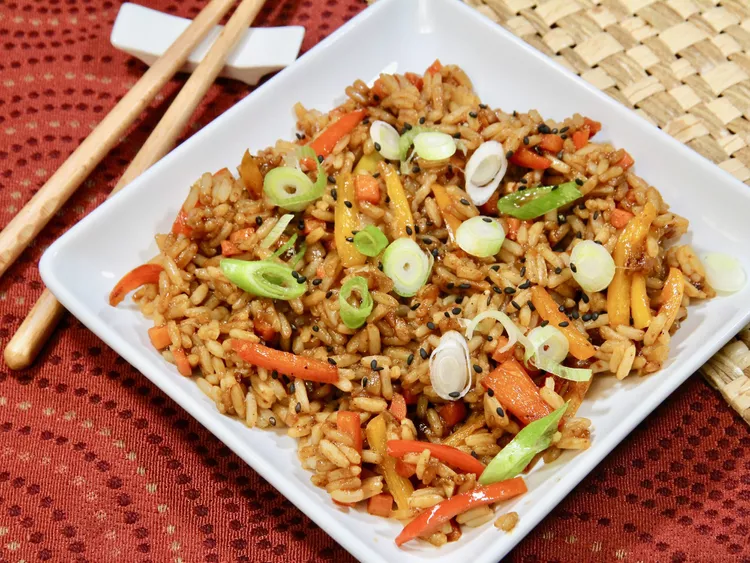

Gochujang Fried Rice

This is the perfect introduction to Korean cuisine and you'll enjoy its simplicity. The spiciness can be controlled by the amount of gochujang. It's often served with chicken or pork mixed in or with a fried egg on the top.
Ingredients
- 2 tablespoons vegetable oil
- 2 teaspoons minced garlic
- 2 teaspoons minced fresh ginger
- 1 cup thinly-sliced mixed color bell peppers
- ½ cup diced carrots
- ¼ cup diced onion
- 4 cups cooked and refrigerated white rice
- 2 tablespoons gochujang (Korean hot and sweet pepper paste), or to taste
- 2 tablespoons low-sodium soy sauce
- 2 teaspoons sesame oil
- 2 tablespoons sliced green onions
- 1 teaspoon toasted sesame seeds
Directions
- Heat a wok or large skillet over medium-high heat, and add vegetable oil. Add garlic and ginger, and cook until fragrant, about 30 seconds.
- Add bell peppers, carrots, and onion, and cook until tender, 4 to 5 minutes. Add a splash of water if the pan gets too dry.
- Add rice, gochujang, soy sauce, and sesame oil, mixing everything well, and stir fry until the rice is hot.
- Garnish with green onions and sesame seeds, and serve.